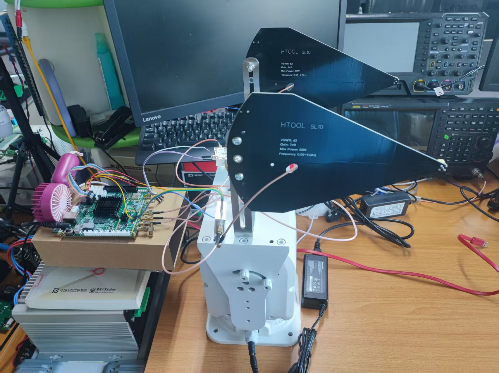
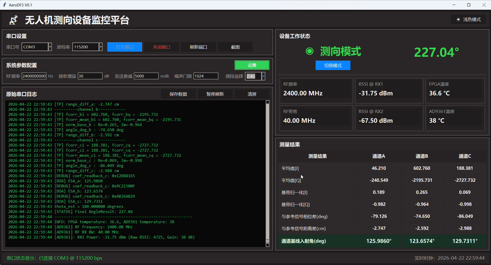
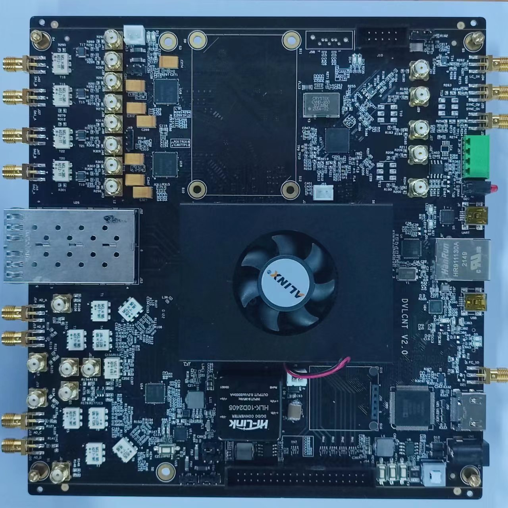
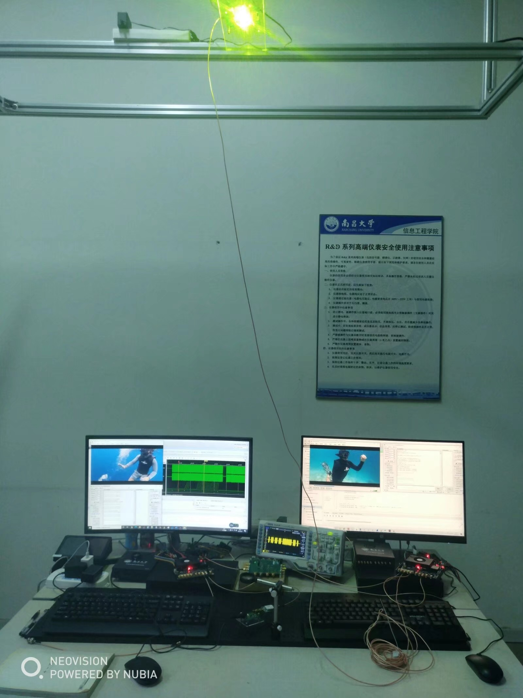
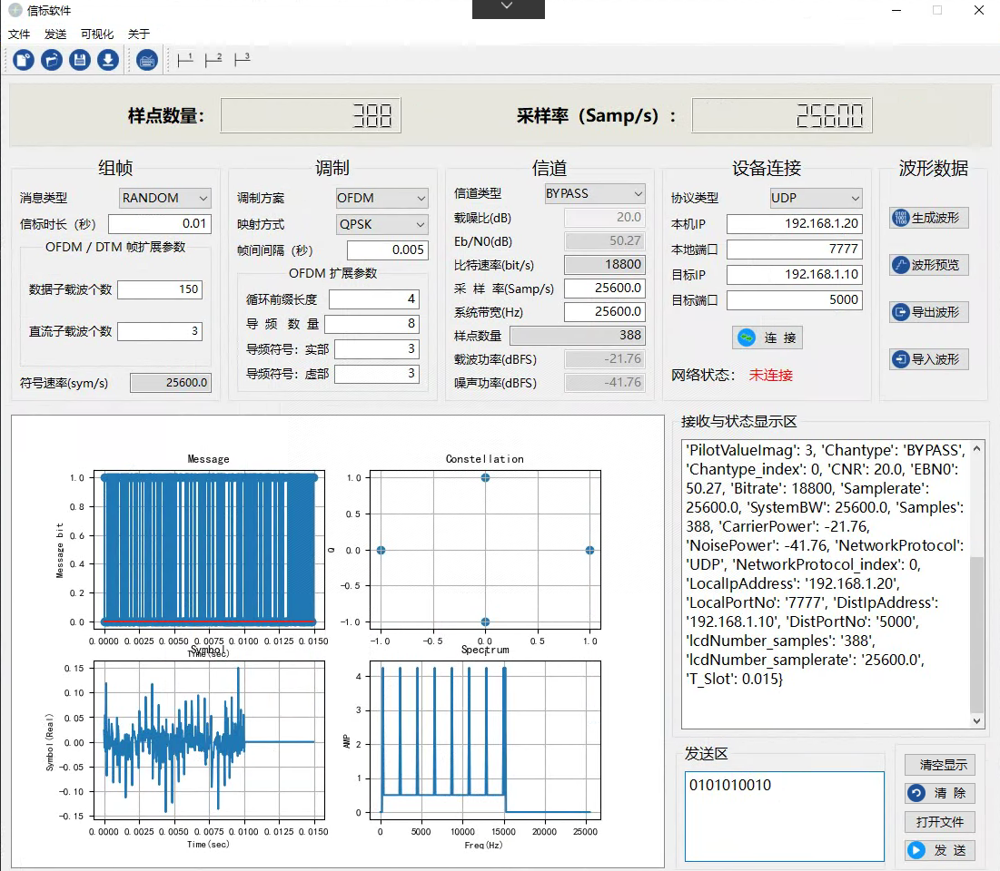
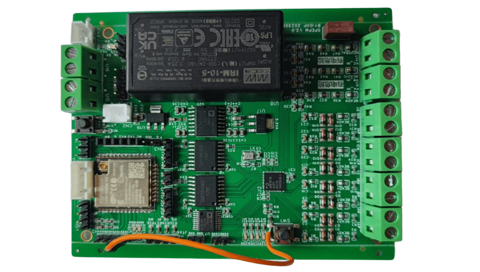
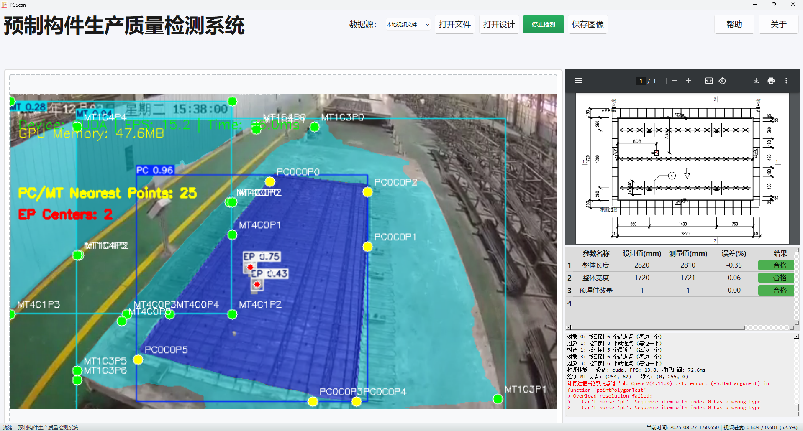
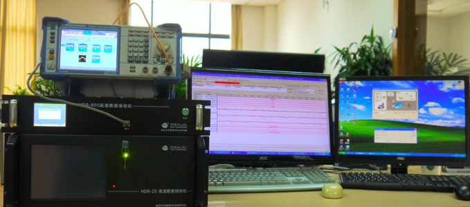

山东建筑大学
信息与电气工程学院
山东省智慧建筑与建筑节能重点实验室
我是山东建筑大学信息与电气工程学院副教授，现任智能技术教研室主任。 2013 年于武汉大学电子信息学院获博士学位，此后在中国电子科技集团公司第五十四研究所从事无人机／弹载数据链相关技术攻关， 并在海信智慧家居负责无线网络协议、信息安全体系与行业标准研制工作。2019 年起在山东建筑大学任教。 目前主要从事通信与测控、数字信号处理及 FPGA 实现、物联网与边缘计算深度学习硬件加速，时间序列分析 以及建筑设备智能化与能效管理等方向的研究与教学工作。
在信号处理与通信工程领域具备坚实的理论基础与丰富的工程经验：自大学二年级起接受电子设计系统训练， 在校期间参与多项预研课题与型号项目；工作期间作为项目负责人主持预研课题 2 项， 并作为主要参与人推动国家发改委智能家居终端产品开发及运行场景示范平台项目。 具有超过 20 年的 FPGA与嵌入式系统开发经历，熟悉企业项目开发全流程。
| 2026.05 — 2026.12 | 卫星数据画像构造与一致性评估横向 · 主持 |
| 2026.03 — 2026.12 | 全频段及重点频段混合侦测电路设计及 PCB Layout横向 · 主持  测向天线阵列、侦测板卡与仪器联试（HTool SL10 双极化测向天线，0.6–6 GHz）  无人机测向设备监控平台：RSSI、相位差、测向角与来波方向实时解算与可视化 |
| 2023.01 — 2024.12 | 面向住宅建筑的非侵入式负荷监测系统研究主持 |
| 2023.05 — 2023.09 | 助力济南历下明湖系信创产业集群创新驱动发展工程横向 · 主持 |
| 2020.11 — 2021.11 | 超高速可见光通信终端项目横向 · 主持  ALINX 基带板：多路射频前端、高速 DAC／ADC 与光模块接口，承担可见光通信收发基带处理  可见光链路发射端、基带板与实时视频业务演示  OFDM／QPSK 调制解调上位机：组帧、信道参数配置、星座图与频谱实时监视 |
| 2019.05 — 2022.05 | 面向智能建筑的异构无线网络规划研究主持 |
| — | 面向大型办公建筑的非侵入式负荷监测系统与技术自研 · 主持
 多路电压电流采集、互感器隔离、无线通信与本地继电器控制 |


| 2026 秋 | 物联网通信原理（本科 24 级，66 人，40+8 学时）、计算机测控网络系统（26 级研究生，32 学时）、建筑物联网应用系统设计课设（物联 232，34 人，2 周）、物联网工程导论（本科 26 级，70 人，8 学时）、认识实习（本科 24 级，66 人，2 周） |
| 2026 春 | 物联网网络技术（本科 23 级，68 人，42+8 学时）、物联网与信息融合（智建 23 级等，122 人，16 学时）、毕业实习（物联 22 级，67 人，2 周）、毕业设计（本科 22 级，10 人） |
| 2025 秋 | 物联网通信原理（本科 23 级，67 人，40+8 学时）、计算机测控网络系统（25 级研究生，32 学时）、建筑物联网应用系统设计课设（物联 221，34 人，2 周）、物联网工程导论（本科 25 级，72 人，16 学时）、蓝桥杯嵌入式竞赛案例分析与实践（公选课，86 人，32 学时）、认识实习（本科 23 级，67 人，2 周） |
| 2025 春 | 物联网网络技术（本科 22 级，67 人，42+8 学时）、Python 语言与科学计算（本科 23 级，66 人，36+12 学时）、物联网与信息融合（智建 22 级，64 人，16 学时）、毕业设计（本科 21 级，10 人） |
| 2024 秋 | 物联网通信原理（本科 22 级，68 人，40+8 学时）、计算机测控网络系统（24 级研究生，32 学时）、建筑物联网应用系统设计课设（物联 211，34 人，2 周） |
| 2024 春 | Python 语言与科学计算（本科 22 级，68 人，36+12 学时）、物联网控制原理与技术课设（本科 211，32 人）、计算机网络（本科 21 级，68 人，40+8 学时）、毕业设计（本科 20 级，10 人） |
| 2023 秋 | 物联网通信技术（本科 21 级，68 人，40+8 学时）、计算机测控网络系统（23 级研究生，32 学时）、建筑物联网应用系统设计课设（物联 201，34 人，2 周） |
| 2023 春 | Python 编程基础（本科 21 级，68 人，16+16 学时）、物联网控制原理与技术课设（本科 20 级，68 人）、建筑物联网应用系统设计（本科 20 级实验，68 人，40+8 学时）、毕业设计（本科 19 级，10 人） |
| 2022 秋 | 物联网控制原理与技术（本科 20 级，68 人，48+8 学时）、物联网通信技术（本科 20 级，68 人，40+8 学时）、计算机测控网络系统（22 级研究生，35+5 人，25 学时）、建筑物联网应用系统设计课设（物联 191，37 人，2 周） |
| 2022 春 | Python 编程基础（本科 20 级，67 人，16+16 学时）、物联网控制原理与技术课设（本科 19 级，71 人）、建筑物联网应用系统设计（本科 19 级，70 人，40+8 学时）、毕业设计（本科 18 级，9 人） |
| 2021 秋 | 物联网控制原理与技术（本科 19 级，71 人，48+8 学时）、物联网通信技术（本科 19 级，72 人，40+8 学时）、计算机测控网络系统（21 级研究生 & 非全，35+5 人，25 学时）、建筑物联网应用系统设计课设（物联 181，36 人，2 周） |
| 2021 春 | Python 编程基础（本科 19 级，64 人，16+16 学时）、物联网控制原理与技术课设（本科 18 级，63 人）、建筑物联网应用系统设计（本科 18 级，63 人，40+8 学时）、毕业设计（本科 17 级，10 人） |
| 2020 秋 | 物联网控制原理与技术（本科 18 级，63 人，48+8 学时）、物联网通信技术（本科 18 级，65 人，40+8 学时）、计算机测控网络系统（20 级研究生 & 非全，47 人，25 学时） |
| 2020 春 | Python 编程基础（本科 18 级，64 人，16+16 学时）、建筑物联网应用系统设计（本科 17 级，73 人，40+8 学时）、建筑物联网应用系统设计课设（物联 172，36 人，2 周）、毕业设计（本科 16 级，10 人） |
| 2019 秋 | 物联网控制原理与技术（本科 17 级，75 人，48+8 学时）、物联网通信技术（本科 17 级，80 人，40+8 学时） |
时迎康（专硕 26 级，研究方向待定）
尹训罡（学硕 26 级，研究方向待定）
刘天琪（学硕 25 级，软件无线电）
冯青鹏（专硕 25 级，非侵入式负荷监测）
程明龙（专硕 25 级，卫星热真空试验数据分析）
李彦泽（专硕 25 级，非侵入式负荷监测）
程铄然（专硕 24 级，非侵入式负荷监测）
庞国涛（22 级，预制叠合板质量检测）
王保义（21 级，办公建筑设备管理系统）
刘福磊（21 级，装配式预制构件生产调度）
田丰（20 级，非侵入式负荷监测方法）
李文峰（20 级，用户分类与用能分解）
| 2025.12 | 教研论文《基于 AI 协作知识库的课程案例库建设与实践》获 2025 全国高校人工智能赋能教育大会一等奖（证书编号 2025AIEE-LW107） |
| 2025.12 | 山东建筑大学第六届教师教学创新大赛一等奖（通信原理 A，新工科副高组，2/4） |
| 2025.09 | 2025 年校级教学成果奖（研究生教育）特等奖（数字低碳转型下控制学科研究生“一体两翼三支撑”培养体系重构与实践，10/11） |
| 2025.09 | 2024—2025 学年校优秀班主任 |
| 2025.05 | 山东建筑大学 2024 年度校级优秀指导教师（二等奖） |
| 2025.03 | 2024 年年度考核优秀 |
| 2025.02 | 山东建筑大学 2025 年度教师教学创新大赛校一等奖（通信原理，2/4） |
| 2024.08 | 山东建筑大学 2023 年度校级优秀指导教师（二等奖） |
| 2024.04 | 2023 年度校级优秀教学质量奖 |
| 2024.03 | 山东建筑大学 2023 年度招生工作先进个人 |
| 2023.06 | 山东建筑大学 2022 年度校级优秀指导教师（一等奖） |
| 2022.03 | 山东建筑大学 2021 年度青年教师教学比赛三等奖 |
| 2020.07 | 山东省机械工业科学技术奖二等奖（3/5，基于 MCMC 的办公场所能源利用行为预测） |
| 2020.03 | 山东省物联网协会科技进步奖三等奖（4/4，基于人工智能方法的建筑设备管控一体化关键技术与应用） |
| 2016.01 | 2015 年度部门勤奋奖（中国电子科技集团公司第五十四研究所） |
| 2016.01 | 2015 年度所内通报表扬 |
| 2015.01 | 2014 年度部门技术创新奖；2014 年度所内通报表扬 |
| 2010.07 | 第七届研究生电子设计竞赛中南赛区优胜奖（宽带频谱监测接收机） |
| 2008.12 | 武汉大学第二届研究生电子设计竞赛二等奖 |
| 2008.06 | 湖北省优秀学士学位论文二等奖（《基于软件无线电的中频数字化接收机硬件平台的设计》） |
| 2007.10 | 2007 年全国大学生电子设计竞赛湖北赛区一等奖（音频信号分析仪） |
| 2007.12 | 武汉大学优秀学生乙等奖学金、阿斯麦奖学金 |
| 2006.05 | 武汉大学第 28 届学习竞赛计算机基础竞赛三等奖；优秀共青团员 |
| 2004.12 | 高考成绩优异，获优秀新生甲等奖学金 |
欢迎就科研合作、技术咨询、研究生报考与本科生科研训练等事宜与我联系。 有意进行 FPGA 与信号处理、物联网与嵌入式、时间序列分析、非侵入式负荷监测方向研究的同学， 可直接邮件说明个人情况与兴趣方向。